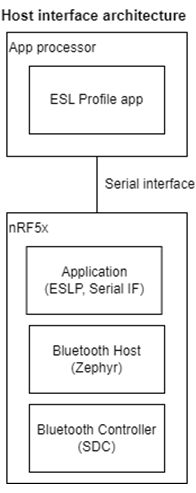

Sample description
The Central ESL sample acts as Access Point(AP) defined in Electronic Shelf Label Profile which controls and manages numbers of ESL Tag. It uses the library Electronic Shelf Label Service (ESLS) client to communicates with ESLs connectionlessly when one or more ESLs are in the Synchronized state.
Note
This sample is experimental and currently in its testing phase. It has been primarily developed for estimation and experimental purposes and is not yet optimized or sufficiently tested for production use. While it provides valuable insight into potential features and functions, its current state may not reflect the final product’s quality or stability. Therefore, it should not be used for production until further updates and refinements are made.
Requirements
The sample supports the following development kits:
Hardware platforms |
PCA |
Board name |
Build target |
|---|---|---|---|
nRF5340 DK |
PCA10095 |
nrf5340dk_nrf5340_cpuapp |
|
Thingy:53 |
PCA20053 |
thingy53_nrf5340_cpuapp |
|
The sample also requires another development kit running a compatible sample (see Bluetooth: Peripheral ESL).
Overview
- In this sample, Nordic provides host interface architecture and full set of Central ESL subcommands to control the AP and auto onboarding feature.
- 
This Sample is an easy-to-use Serialized Access Point which can be used as a development platform to help customers test and develop ESL Tags (Bluetooth: Peripheral ESL).
Beside this, this sample can be used also in combination with more powerful hosts(e.g.: Linux PC) in order to develop/implement a full ESL AP application. The AP provides serial connection to the HOST (PC/Linux) via USB interface (nRF USB – J3 connector on nRF5340 DK; USB-C connector on Nordic Thingy:53). Two virtual COMs are associated this the USB port:
Shell command COM port (used for shell commands)
SMP/mcumgr COM port (used for transfer images from PC to AP)
When booting up, the Access Point starts periodic advertising with response(PAwR) with predefined PAwR parameters. At this point, the AP is ready to scan for new tags, connect / configure / synchronize new tags, send encrypted commands, receive encrypted responses (refer to ESL Service and ESL profile). All such functionalities are exposed via Central ESL subcommands. However, since this process may involve many decisions and many shell commands inputs, in order to make testing / developing process easier, this sample provides also a auto onboarding feature.
Auto Onboarding and Auto PAST
Auto Onboarding feature , which associates Tags automatically to the AP, by continuously & automatically performing the following tasks in the background:
Scan for new unsynchronized ESL Tags(new ones or previously associated)
Connect and configure them one by one: e.g. read/write characteristics (including AP sync maetiral, ESL Address, etc), send pre-loaded images (i.e. images previously transferred from the PC to the AP)
Note
Max number of devices that can be handled by the automatic onboarding feature is depending on these Kconfig.
CONFIG_ESL_CLIENT_MAX_GROUP(default 128),CONFIG_ESL_CLIENT_DEFAULT_GROUP_ID(default 0),CONFIG_ESL_CLIENT_DEFAULT_ESL_ID(default 0),CONFIG_BT_ESL_AP_AUTO_TAG_PER_GROUP(default 8).With default configuration, Tags are added from Group 0 with increasing ESL_ID (0,1,2,3,4,5,6,7) until reaching 8th. Then, the next Tag will be added to Group 1 with ESL_ID 0, and so on. For handling more devices, shell commands should be used.Note
The AP will store information of associated ESL Tags into non-volatile database (external SPI flash) with
CONFIG_BT_ESL_TAG_STORAGEenabled. This option is mandatory reruired for auto onboarding feature.Note
During association, the AP sends images only to those tags that are running the EPD variant Bluetooth: Peripheral ESL sample (AP reads characteristics of the new associated tags, and only if it is recognized as specific tag type , it will transfer the image)
Note
You can observe the output log of auto onboarding process on the shell terminal. Here an example of successful onboarding of ESL Tag (ESL Peripheral without EPD):
#TAG_SCANNED: 1,C9:AC:AD:A6:E5:79 (random) to list Connected:Conn_idx:00 #SCANNED_TAG: #DISCOVERY: 1,0x00 #CONFIGURED: 1,0x0000,0x0001 #BASIC_STATE:1,0x0000 SERVICE_NEEDED:off SYNCHRONIZED:off ACTIVE_LED:off PENDING_LED_UPDATE:off PENDING_DISPLAY_UPDATE:off BASIC_RFU:off #PAST:1,00 Disconnected:Conn_idx:0x00 (reason 0x13)Here an example of successful onboarding of ESL Tag (ESL Peripheral with EPD variant):
#TAG_SCANNED: 1,C9:AC:AD:A6:E5:79 (random) to list Connected:Conn_idx:00 #SCANNED_TAG: #DISCOVERY: 1,0x00 #CONFIGURED: 1,0x0000,0x0001 #BASIC_STATE:1,0x0000 SERVICE_NEEDED:off SYNCHRONIZED:off ACTIVE_LED:off PENDING_LED_UPDATE:off PENDING_DISPLAY_UPDATE:off BASIC_RFU:off #OTS_WRITE:1,0,0,esl_image_09 #OTS_WRITTEN:1,00,0,15006,0x1754215a #OTS_WRITE:1,0,1,esl_image_0A #OTS_WRITTEN:1,00,1,15006,0xdf631601 #PAST:1,00 Disconnected:Conn_idx:0x00 (reason 0x13)0000 Is the ESL Address in hexadecimal, where two MSB are the Group ID, and two LSB are ESL ID.
Sends PAST info to unsynchronized ESL Tag
Note
The ESL client provides auto PAST feature. If a previously associated Tag is scanned (i.e. if ESL Tag is in database), Access Point will connect using the previously stored Bluetooth bonding information and then configure the tag accordingly to previous settings stored in the database (note: EPD images will not transferred in this case – EPD images are transferred only the first time tag gets associated to the AP, if images are available in the AP). Access Point then will send PAST automatically.
Note
if a previously associated tag is reset (i.e. it has erased also the bonding information with the AP), the AP will not be able to connect to that tag (because it will try to connect with the old bonding keys in the AP database). Erase the AP database by using Button 2 to clear all content of database or shell command to clear specified Tag to start the process again.
Once tags are onboarded and synchronized to the AP, commands can be sent/received using the User interface (either using the DK buttons features in the DK and/or the Central ESL subcommands by shell commands ). Auto onboarding feature should be used only for testing/development or as a starting point for more complex applications. For production (ESL AP), shell commend is recommended.
User interface
This sample provides two ways to control the AP. One is through buttons on the development kit, the other is through shell commands.
Such User Interface takes advantage of the Auto Onboarding feature
- Button 1:
Press to start Auto onboarding AP feature.
AP scan and connect unsynchonrized ESL Tag.
AP configure unsynchronized ESL Tag.
AP send image file to unsynchronized ESL Tag.
AP send PAST info to unsynchronized ESL Tag.
- Button 2: (only on nRF5340 DK, not available on the Nordic Thingy:53)
Erase the database of associated ESL Tags which is used by Auto Onboarding and Auto PAST from the AP.
Note
If you push this button, you should also push Button 1 on the ESL Tag as well to reset the ESL Tag.
This procedure will not erase the EPD images stored in the AP (if any transferred).
- Button 3: (only on nRF5340 DK, not available on the Nordic Thingy:53)
Change Image on the ESL Tag display.
By pressing this button, AP sends a Predefined ESL sync packet to a specific group. Commands rotate at each press of the button, in the following order, starting from Group
CONFIG_ESL_CLIENT_DEFAULT_GROUP_ID(Default 0) to Group 2CONFIG_BT_ESL_AP_GROUP_PER_BUTTON(Default 3)e.g.:0x7 (display 0 image 0 broadcast) is sent to Group 0
0x8 (Display 0 image 1 broadcast) is sent to Group 0
0x12 (Tag default ESL_ID ~ ESL_ID+10 Display Img 0) is sent to Group 0
0x13 (Tag default ESL_ID ~ ESL_ID+10 Display img 1) is sent to Group 0
0x7 (display 0 image 0 broadcast) is sent to Group 1 and so on, until reaching Group
CONFIG_BT_ESL_AP_GROUP_PER_BUTTON(Default 3) then turning backCONFIG_ESL_CLIENT_DEFAULT_GROUP_ID(Default 0)- Button 4: (only on nRF5340 DK, not available on the Nordic Thingy:53)
Flash ESL Tag LED in predefined pattern.
By pressing this button, AP sends a predefined Predefined ESL sync packet to a specific group. Commands rotate at each press of the button, in the following order, starting from Group
CONFIG_ESL_CLIENT_DEFAULT_GROUP_ID(Default 0) to GroupCONFIG_BT_ESL_AP_GROUP_PER_BUTTON(Default 3)Note
Button 3 and 4 will continually send ESL command through PAwR and cycles from group
0to CONFIG_BT_ESL_AP_GROUP_PER_BUTTON
- LED 1:
Stable on means AP is booted-up.
Start blinking, signaling the Auto Onboarding feature on the AP is activate: AP is scanning for ESL tags, connecting one by one to them, configuring them and transferring synchronization (PAST).
Start scan continuously with command:
esl_c scan 1 0The sample shows the following output:
#SCAN:start #TAG_SCANNED: 1,XX:XX:XX:XX:XX:XX (random) to list
Connect ESL Tag to connection index 0 with command:
esl_c acl connect 0The sample shows the following output to indicate that connection and service discovery is succeed:
Connected:Conn_idx:00 #DISCOVERY: 1,0x00
Optionally, AP can connect Tag by knowing BLE address out-of-band without scanning:
esl_c acl connect_addr 0 AA:BB:CC:DD:EE:FF
Configure ESL Tag to esl address
0x0101with command:esl_c acl configure 0 0101The sample shows the following output to indicate that ESL Tag has been configured and update complete OP code sent:
Configure conn_idx 0 esl_addr 0x0101 CONFIGURED: 1,0x0000,0x0101 #BASIC_STATE:1,0x0101 SERVICE_NEEDED:off SYNCHRONIZED:off ACTIVE_LED:off PENDING_LED_UPDATE:off PENDING_DISPLAY_UPDATE:off BASIC_RFU:off
Read information of connected Tag for further use with command:
esl_c esl_c dumpThe sample shows the following output:
AP Sync Key 00000000: 6d 3a 14 4f f1 19 45 f7 4d 5e a8 50 75 45 b9 d2 |m:.O..E. M^.PuE..| 00000010: ff da 94 bd 8e 9b 33 61 |......3a | Randomizer 00000000: 60 83 38 82 f6 |`.8.. | #ABSTIME:570155 Connected Tag counts 0 Tag 0 ESL handles: 0x002e 0x0030 0x0032 0x0034 0x0036 0x0038 0x003a 0x003c 0x003e 0x003f 0x0016 OTS client handles: start_handle 0x0001 end_handle 0xffff obj_feat 0x001b obj_name 0x001d obj_type 0x001f obj_size 0x0021 obj_prop 0x0025 obj_created 0x0000 obj_modified 0x0000 obj_id 0x0023 obj_ocap 0x0027 obj_olcp 0x002a BLE ADDR:C8:6D:40:1E:C2:AE (ra#ndom) CHR_READ:1 ESL_ADDR:0x0101 RSP_KEY:0x0b73c85e8a37d6094fe536812f6720a06d60d1cf4c9eadd1 Max_image_index:1 DISPLAY:1,0x6400640001 SENSOR:2,0x00540000000115198794 Sensor 0 Mesh property ID Sensor type: 0x0054 Sensor 1 vendor_specific_sensor Company ID: 0x1915 Sensor Code: 0x9487 LED:4,0x4c4c4c4c led idx 0, type Mono color 0x0c:Green led idx 1, type Mono color 0x0c:Green led idx 2, type Mono color 0x0c:Green led idx 3, type Mono color 0x0c:Green PNPID:VID:0x1915, PID:0x5484
Send image(optional) on AP index 0 to ESL Tag image index 0 connection 0 with command:
esl_c obj_c write 0 0 0
This command is equivalent to previous one. You can use filename without original pattern ots_image_XX
esl_c obj_c write_filename 0 0 ots_image_00The sample shows the following output indicate that image has been transferred:
#OTS_WRITE:1,0,0,esl_image_00 #OTS_WRITTEN:1,00,0,1246,0x7bd5f88
After configured all data and sent all image, use periodic advertising sync transfer procedure to let ESL Tag entering synced with command:
esl_c acl past 0The sample shows the following output indicate that ESL received PAST and disconnect:
PAST:1,00 Disconnected:Conn_idx:0x00 (reason 0x13)
Ping ESL Tag of ESL address 0x0101 with PAwR by raw ESL payload:
esl_c pawr push_sync_buf 1 0001
Control LED 0 to flash to all ESL Tags of group 0 with PAwR with Predefined ESL sync packet:
esl_c pawr update_pawr 1 0
Turn LED 0 off to all ESL Tags of group 0 with PAwR with Predefined ESL sync packet:
esl_c pawr update_pawr 4 0
Display image 0 to all ESL Tags of group 1 with PAwR with Predefined ESL sync packet:
esl_c pawr update_pawr 7 1
See Central ESL subcommands for a list of available subcommands.
Setup - Transfer Images from PC to AP over USB
One of major task of Access Point is to provide images to ESL Tag in configuring and updating state. Before activating auto onboarding (Button 1) or, anytime before sending images using Object Transfer Service via shell commands between AP and Tag, it is necessary to transfer the images from PC to the AP (in external flash) over USB. mcumgr_smp_protocol_specification is used over the other COM port available over USB. Here example:
Install Mcumgr Command-line Tool tool
Prepare the images to be transferred. The image format is depending on what EPD and color depth your are using.
Note
Nordic provides two sample files that can be used with the Bluetooth: Peripheral ESL EPD variant.
EPD format: Use this format on Access Point
esl_image_btesl_image_nordicBMP format: This format is only for reference
esl_image_00_240x120_bt.BMPesl_image_01_240x120_nordic_logo.BMP
{kind=link}
{kind=link}
Transfer images from the PC to the AP: run from cmd /command line
mcumgr --conntype="serial" --connstring="COM4,baud=115200,mtu=512" fs upload esl_image_bt /ots_image/esl_image_00 mcumgr --conntype="serial" --connstring="COM4,baud=115200,mtu=512" fs upload esl_image_nordic /ots_image/esl_image_01
Note
Remember to change COM4 to the right COM port in your PC. Images are stored in external non-volatile flash.
Non-volatile external flash is kept even after reset of DK (power cycle), or after programming or after AP database erase (Button 2)
Once the images are in the AP, it is possible to transfer them to the tags at any time using shell commands, assuming the AP and Tag are in an ACL connection. Refer to Central ESL subcommands for this.
#. As an alternative, for demo purposes, Auto Onboarding feature can be used: If auto onboarding is started after the transfer of image (i.e. a new Tag is associated for the first time after transferring the image to the AP and after pushing Button 1), the AP will transfer automatically these images to the ESL Tag DevKit with EPD shield, during the associating procedure.
Configuration options
Check and configure the following Kconfig options:
- BT_ESL_SECURITY_ENABLED
This enables BT SMP and bonding which are security requirement of ESL Profile. Disable BLE security of the ESL service for debugging purposes.
- BT_ESL_AP_AUTO_MODE
Enable auto onboarding feature. With this feature AP will scan and connect unsynchonrized ESL Tag, configure and send predefined image to unsynchronized ESL Tag, send PAST info to unsynchronized ESL Tag automatically. This feature also stores response key material for all of associated ESL tags. The key material will be used to decrypt response EAD from ESL Tag when using predefined ESL packet.
Note
Auto onboarding feature is meant to be used for small scale testing and development purposes. For larger scale, Central ESL subcommands give more flexibility and control over the AP functionalities.
- BT_ESL_AP_AUTO_TAG_PER_GROUP
- How many tags should keep in same group for auto onboarding. Tag number exceeds this number should be in next group. Otherwise, response key material slot is not enough for all tags in same group.
How to choose this number depends on what scenario we want to show. Less or equal to
CONFIG_ESL_CLIENT_MAX_RESPONSE_SLOT_BUFFERdemostrates decrypts response EAD on-the-fly. Greater thanCONFIG_ESL_CLIENT_MAX_RESPONSE_SLOT_BUFFERdemostrates ESL AP able to control large amount of tags at the same time.”
- BT_ESL_AP_GROUP_PER_BUTTON
Button 3 and Button 4 could be used as user interface. Button 3 will send Predefined ESL sync packet to all tags in group x to change image on display. Button 4 will send predefined command to all tags in group x to flash LED in predefined pattern. This option defines how many groups should be used for this feature. For example, if this option is set to 2, Button 3 and Button 4 will send Predefined ESL sync packet to all tags in group 0 and 1 alternatively.
- BT_ESL_AP_AUTO_PAST_TAG
Enable auto PAST feature. With this feature AP will send PAST automatically if connected ESL Tag is in database.
Note
Auto PAST feature is meant to be used for small scale testing and development purposes. For larger scale, Central ESL subcommands give more flexibility and control over the AP functionalities.
- BT_ESL_AP_PTS
Enable PTS feature. With this feature AP will send PTS command to connected ESL Tag. This feature is used for PTS test only.
Building and running
To build the sample with Visual Studio Code, follow the steps listed on the How to build an application page in the nRF Connect for VS Code extension documentation. See Building and programming an application <https://developer.nordicsemi.com/nRF_Connect_SDK/doc/2.4.0/nrf/getting_started/programming.html#gs-programming> for other building and programming scenarios and Testing and debugging an application for general information about testing and debugging in the nRF Connect SDK.
Testing with other DevKits
After programming the sample to your development kit, complete the following steps to test it:
Connect the computer to the connecter labeled nRF USB on DevKit or the USB connector on the Thingy:53 using a USB cable. Turn on the kit; the computer will assign to the kit two virtual COM ports (Windows) or ttyACM devices (Linux), which are visible in the Device Manager. One port is for Central ESL subcommands. The other port is for EPD image transfer (SMP protocol).
Connect to the kit that runs this sample with a terminal emulator (for example, PuTTY or the Serial Terminal in nRF Connect for Desktop). Connect with the following settings:
Baud rate: 115200
8 data bits
1 stop bit
No parity
HW flow control: None
Note
To know if the right port is selected, enter new line and “ESL_AP:~$” should show up.
Optionally, connect the RTT console to display debug messages.
Optionally (required for out of the box testing in combination ESL Tag sample with EPD), transfer the images from PC to the AP.
Test the sample either by by auto onboarding feature or using Central ESL subcommands manually as described in User interface.
Dependencies
This application uses the following nRF Connect SDK libraries:
In addition, it uses the following Zephyr libraries:
include/zephyr/types.hboards/arm/nrf*/board.h-
include/kernel.h
-
include/bluetooth/bluetooth.hinclude/bluetooth/gatt.hinclude/bluetooth/hci.hinclude/bluetooth/uuid.h